Artifacts >
Artifacts >
 Requirements Artifact Set >
Requirements Artifact Set >
 {More Requirements Artifacts} >
Boundary Class >
{More Requirements Artifacts} >
Boundary Class >
 Guidelines
Guidelines
Artifacts >
Requirements Artifact Set >
{More Requirements Artifacts} >
Boundary Class >
Guidelines
Guidelines:
|
Boundary Class |
|
Boundary classes are used to model the interaction between a system and its surroundings, i.e., its actors. The following aspects of the interaction are captured on boundary classes:
Boundary classes can thus be used to capture the requirements on a user interface. Making an object model of the user interface is normally very worthwhile, since many user interfaces created today are object-oriented, and the trend is towards even more object orientation, because of its benefits with regard to natural and efficient use. Although many of the user-interface design decisions are best made during prototyping and rapid development of the user interface itself, reasoning about the structure and usability requirements on the user interface is natural to do in terms of an object model.
To understand the rest of these guidelines, please refer to the section
"Windows Fundamentals: Setting the
Context" in Guidelines: User Interface (General).
A window-based user interface can be modeled by boundary classes; this can be described at a high level in the following points:
Given the windows and their objects in the examples above, we identify the following boundary classes, responsibilities, attributes, relationships, and special requirements.
The following boundary classes can be identified for a document editor:
Note that Character is included just because it is essential to view a character as an object of its own in this particular application, i.e., in the document editor. Character classes should of course not be used if not considered essential in the application being modeled. In such cases, Character is probably of too fine a granularity.
The following boundary classes can be identified for a mail application:
The following boundary classes can be identified for file manipulation:
The following responsibilities can be identified for a document editor:
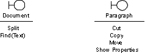
The Split responsibility is to split a Document in two (sub) windows. The Find(Text) responsibility is to find some Text in the Document.
The following responsibilities can be identified for a mail application:
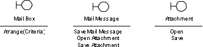
The Arrange(Criteria) responsibility is to arrange the Mail Messages of a Mail Box according to various Criteria, such as sender, subject, receive time, etc.
The following responsibilities can be identified for file manipulation:
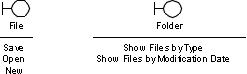
The following attributes can be identified for a document editor:
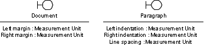
Note that the attribute types are on a conceptual level here, and may be realized by various units of measure such as centimeters, inches, etc. in the actual user interface.
The following attributes can be identified for a mail application:
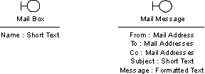
The following aggregation relationships can be identified for a document editor:
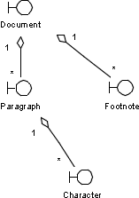
Note that the primary window, here the Document, is often an aggregate, since it contains an arbitrary number of other objects. However, aggregates (such as the Paragraph) also exist within other aggregates and do not necessarily represent primary windows.
The following aggregation relationships can be identified for a mail application.
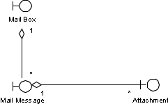
Regarding the files, the relationship between Folder and File could also be modeled as an aggregate:
The following association relationships can be identified for a document editor:
A Footnote must always be anchored to one Character. On the other hand, a Character can associate one or several Footnotes.
Note the difference between aggregations and (ordinary) associations. Aggregations are often used to model containment hierarchies, whereas associations can model relations and alternative navigation paths between different containment hierarchies.
A slightly more advanced use of associations is to model user-controlled inheritance. Then, an association should go between the inherited object and the inheriting object; an example is when a Paragraph inherits a Style:
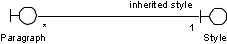
The following generalization relationship can be identified for a document editor:
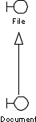
A Document is also a File, implying that it inherits all its responsibilities and attributes.
The following generalization relationships can be identified for a mail application:
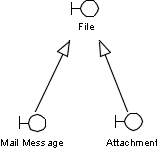
Special requirements on boundary classes can be:
A usability requirement regarding the Character class could be:
A Character should provide navigation to any associated Footnote by a single mouse move.
A usability requirement regarding the Mail Message class could be:
The Mail User should not be disturbed by incoming Mail Messages when reading existing Mail Messages.
A usability requirement regarding the Mail Box class could be:
The Mail User should be able to arrange Mail Messages with a single mouse click.
Other usability requirements have to do with attribute values and object volumes. This is because the user interface often has a requirement to provide a readable interface regarding a specific range of an attribute value, or to provide usable management of a range of a specific object volume. Such ranges should then represent the normal cases, and cover up to 90% of them. The user interface will in turn cover all values, including those exceeding the ranges, but can be optimized for values in the normal ranges.
A usability requirement regarding object volumes contained by the Document class could be:
A Document should be able to manage 1000 Paragraphs without delaying the scrolling mechanism.
A usability requirement regarding attribute values of the Mail Message class could be:
A Subject should be able to include 40 characters without being hyphenated.
Since the boundary classes model interactions between the actors and the system, we make this clear by associating each actor with the boundary classes handling the interaction with the actor.
For the document editor, we have identified a Writer actor that interacts with Documents.
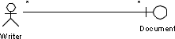
A Writer can work with several different Documents. A Document can be created by several different Writers. Note that this probably implies that a Document needs to be able to discriminate between different Writers.
Moreover, in this case we let it be understood from the context that a Writer interacts with all objects contained in the aggregation hierarchy under Document.
For the mail application, we have identified a Mail User actor that interacts with Mail Boxes.
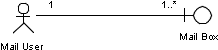
In this case, we also let it be understood from the context that a Mail User interacts with all objects contained in the aggregation hierarchy under Mail Box.
A problem with many user interfaces is that they have too many windows, and window navigation paths that are too long. In addition to adding needless interaction overhead, window navigation paths that are too long make it more likely that the user will "get lost" in the system. Ideally, all windows should be opened from one single primary window, often called the main window. Then you have a maximum navigation length of two. Avoid navigation lengths greater than three.
It is thus an important goal when building the user interface to have only one primary window per actor, if possible containing all objects that the actor needs to access. If this is not possible, the window should provide navigation to all objects that the actor needs to access. It is important that the actor spends a considerable part of his "use time" interacting with this primary window.
As a result, this has the following impact on the object model of the user interface:
The goodness criteria presented above are on quite a detailed level. On a higher level, we can list the following criteria, which may not provide as much detail, but at least communicate the intent of the boundary classes:
|
Rational Unified
Process
|